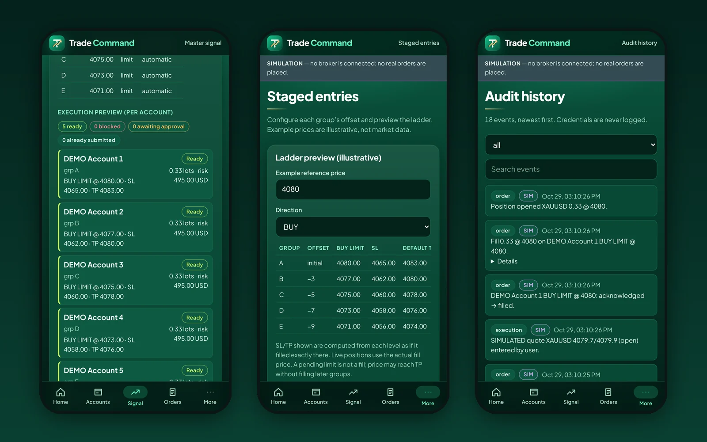

A mobile app can put a service in your customers' pockets or give field teams a faster way to work. It can also become an expensive icon nobody opens. This guide is for South African business owners and managers deciding whether to build an app, and how to do it well: the choices that drive cost, the local conditions that shape design, and the app store and POPIA rules you need to plan for in 2026.
The short answer
Build a mobile app when people will use it often, need to sign in, work away from a desk, or need something a mobile website cannot do well, such as offline capture, the camera, location or notifications. For most business apps, a cross-platform build that serves Android and iOS from one codebase gives the best balance of cost and quality, with native development reserved for apps that lean heavily on device hardware. In South Africa, design for Android first, for patchy connectivity and for data costs. Plan for POPIA from the start, publish under accounts your company owns, and budget for updates after launch: the app stores change their requirements every year.
Do you need an app at all?
The most useful question to ask first is not "how do we build an app?" but "what does someone need to do, and where will they be when they do it?" Many businesses are better served by a fast, mobile-friendly website or web application. Others genuinely need an app.
A mobile-friendly website is usually enough when
- People visit occasionally to find information, compare services or contact you.
- No sign-in is needed, or sign-in is rare.
- You want to be found in search engines, which index websites, not the inside of apps.
An app earns its place when
- The same people use it repeatedly: customers checking orders or bookings, staff completing jobs or checklists.
- Work happens on the move, in places where connectivity drops, so data must be captured offline and synchronised later.
- The task needs device features: the camera for scanning or photos, location for site visits, or push notifications for time-sensitive updates.
- Speed and convenience matter enough that an icon on the home screen will genuinely be used.
Most of the apps we build at Auris Nexus are not standalone products. They are the mobile layer of a business system: a customer app connected to a portal, or a field app that writes to the same data the office already uses. If the system behind the app is not right, the app will not fix it, so it is worth reviewing the underlying process first. Our guide on whether to build, buy or configure business software covers that decision.
Native, cross-platform or progressive web app
Once you know an app is the right answer, the next decision is how to build it. There are three mainstream approaches, and each is the right choice for some projects.
| Approach | What it is | Best for | Trade-offs |
|---|---|---|---|
| Native | Separate apps written for each platform, typically in Swift for iOS and Kotlin for Android. | Apps that depend heavily on device hardware, advanced graphics or the newest platform features. | Two codebases to build and maintain, so higher cost and longer timelines. |
| Cross-platform | One codebase that produces Android and iOS apps, using frameworks such as React Native or Flutter. | Most business apps: customer portals, bookings, field work, approvals and dashboards. | Very deep platform-specific features may still need some native code. |
| Progressive web app (PWA) | A web application that can be installed to the home screen and work offline, delivered through the browser. | Internal tools and logged-in workflows where store distribution is not needed. | No app store listing, and some device features are limited, particularly on iOS. |
A progressive web app is often overlooked. It needs no app store review, every user is always on the latest version, and it shares its code with the desktop version of the system. For a private, logged-in tool used by a known group of people, that can be the most cost-effective answer.

As a worked example, Trade Command is a mobile-first console we built and tested as a PWA, using React and strict TypeScript, with Supabase Auth and PostgreSQL row-level security behind it. Its core logic is kept separate from the interface and covered by unit and integration tests, and the whole workflow is checked with automated end-to-end tests on a phone profile. A store app was not needed for a private tool, so the PWA approach kept one codebase for every device.
Designing for South African conditions
An app designed only for a fast connection and a recent flagship phone will frustrate a large share of South African users. A few local realities should shape the design from day one.
Android comes first for most audiences
According to StatCounter Global Stats, roughly three in four mobile page views in South Africa came from Android devices in mid-2026, with iOS making up most of the rest. Those figures measure web traffic rather than device ownership, and your own audience may differ (a corporate team on company iPhones, for example), but for most customer and field apps, strong Android support is not optional. Android also spans a wide range of devices, so test on modest, older phones, not only new ones.
Plan for patchy connectivity and power interruptions
Field staff move between areas with strong and weak signal, and power interruptions can take local networks down with them. An offline-first design stores work on the device, lets the user carry on, and synchronises when the connection returns, with clear indicators of what has and has not been sent. Retrofitting offline behaviour later is much harder than designing it in.
Respect the cost of data
Mobile data is a real cost for many users. Keep the download size small, compress images before upload, avoid re-downloading data the app already holds, and let users choose to sync large files on Wi-Fi only.
Fit how people already communicate and pay
Many South African customers already expect to reach a business on WhatsApp, so a "chat with us" hand-off can be more useful than a custom in-app chat. Where the app takes payment for physical goods or real-world services, a local payment gateway is usually integrated; check the current app store rules for anything sold as a digital product, which is handled differently.
How a business app is built, step by step
- Discovery. Define who will use the app, what they need to do, where they will be, and how success will be measured. Map the process the app supports, including the workarounds people use today.
- Scope and architecture. Decide the approach (native, cross-platform or PWA), the user roles, the data model, offline behaviour, integrations and hosting. This is where the budget is really set.
- Design. Wireframes, then screen designs, tested with real users. For field apps, test outdoors on a phone, with one hand, not only on a desktop monitor.
- Build in phases. Release the smallest version that delivers value first, for example job capture before reporting, then extend it.
- Testing. Combine automated tests for business logic, end-to-end tests that drive the app on a phone profile, and manual testing on a spread of real Android and iOS devices, including poor-connection scenarios.
- Release. Prepare store listings, screenshots, privacy disclosures and review notes, then publish to testers before the public.
- Support and improve. Monitor crashes and usage, fix issues, keep up with operating system changes and plan the next phase.
Security and POPIA
Most business apps handle personal information: names, contact details, locations, photos or employee records. In South Africa, that brings the app under the Protection of Personal Information Act 4 of 2013 (POPIA), which the Information Regulator enforces. Practical steps include:
- Collect less. Only ask for data and device permissions the app genuinely needs, and explain why at the point you ask.
- Secure it on the device. Use the platform's secure storage for credentials and tokens, and avoid keeping sensitive data on the phone longer than needed.
- Secure it in transit and at rest. Encrypt connections, and restrict access on the server by user role, not only in the app's screens.
- Keep an audit trail of important actions, and make sure logs never contain passwords or other secrets.
- Agree retention and breach procedures before launch, not after an incident.
The OWASP Mobile Application Security Verification Standard (MASVS) is a widely used checklist covering storage, cryptography, authentication, network communication and privacy, and is a sensible baseline to ask your developer to work to. Our POPIA checklist for business software covers the wider compliance questions.
Accessibility
An accessible app is easier for everyone to use, including people with visual, motor or cognitive impairments, and people using a phone in bright sunlight or with one hand. Support the platform's screen readers and text-size settings, keep touch targets large, ensure sufficient colour contrast and never rely on colour alone to convey meaning. The W3C's WCAG 2.2 guidelines are written for web content but are the most widely recognised reference, and they apply directly to progressive web apps.
App store requirements in 2026
Publishing to the Apple App Store and Google Play involves more than uploading a file. Build these steps into the plan and the timeline.
- Developer accounts. The Apple Developer Program costs US$99 a year; Google Play charges a once-off US$25 registration fee. Register both in your organisation's name.
- Google Play testing for new personal accounts. Personal developer accounts created after 13 November 2023 must run a closed test with at least 12 testers, opted in continuously for 14 days, before applying for production access (Google Play Console Help). This is another reason for a business to publish under an organisation account.
- Target API level. From 31 August 2026, new apps and app updates for phones on Google Play must target Android 16 (API level 36) or higher (Google Play Console Help). Requirements like this move every year, so an app that is not maintained will eventually be unable to ship updates.
- Privacy disclosures. Apple's App Privacy details and Google Play's Data safety section describe what data the app collects and why, and both stores expect a privacy policy. They must match what the app actually does.
- Review. Both stores review apps before publication and may reject them. Allow time in the launch plan for questions and resubmission.
- Commission on digital sales. Both stores take a commission on digital goods and subscriptions sold in the app. Apple's Small Business Program reduces its rate to 15% for qualifying developers, and Google's service fees vary by market and have been changing, so check the current terms if in-app sales are part of the business model.
What a business app costs
The cost of an app is driven far more by what it has to do than by the number of screens. The main factors are:
- the number of user roles and what each can see and do;
- offline capture and synchronisation;
- integrations with existing systems, payment gateways or third-party services;
- device features such as camera, scanning, location and notifications;
- whether a matching web or admin system is needed, or already exists;
- the approach: native for both platforms costs more than one cross-platform codebase or a PWA.
At Auris Nexus, mobile apps are scoped as custom platforms starting from R50,000, with the final price set after a short discovery. On top of the build, budget for the app store accounts, hosting and back-end services, any third-party services (maps, messaging, notifications), and ongoing support. Our guide to what custom software costs in South Africa explains how to compare quotes on a like-for-like scope.
After launch: support and updates
An app is never finished on launch day. Apple and Google release new operating system versions every year, raise their minimum requirements, and change their policies. Devices change, and so do the people using the app. A realistic plan includes:
- crash and error monitoring, with someone responsible for responding;
- scheduled updates to keep up with platform and security requirements;
- usage analytics, collected in line with your privacy policy, to see which features are used;
- a backlog of improvements, prioritised by what users and the business actually need.
Questions to ask a development partner
- Will you tell us if we don't need an app, or if a PWA would do?
- Which approach do you recommend for our app, and why?
- How will the app behave offline and on a slow connection?
- How do you test on real Android and iOS devices?
- How do you handle POPIA, security and the app store privacy disclosures?
- Whose names will the app store accounts, the code and the data be in?
- What happens after launch, and what does support cost?
For a broader checklist, see how to choose a custom software development company in South Africa.
Key takeaways
- Start with what people need to do and where they will be; an app is not always the answer.
- Cross-platform suits most business apps; native suits hardware-heavy apps; a PWA suits many internal tools.
- Design for Android, weak connectivity and the cost of data.
- Build POPIA, security and accessibility in from the start.
- Own your store accounts, and budget for annual updates after launch.
The best business app is the one people open every day because it makes their work easier, not the one with the most features.
Frequently asked questions
It depends mainly on the number of screens and user roles, whether the app must work offline, and which systems it connects to. At Auris Nexus, mobile apps are scoped as custom platforms starting from R50,000. Budget separately for the Apple developer membership, the Google Play registration fee, hosting and ongoing support. See pricing.
Look at your own users first. Across South Africa, most mobile web traffic comes from Android devices, so an app for customers or field staff usually needs strong Android support. A cross-platform build covers both from one codebase, which is why many business apps launch on both stores at once.
Often, yes, especially for internal tools and logged-in business workflows. A PWA installs from the browser, needs no app store review and updates instantly. Choose a store app when you need deep device features, store visibility or capabilities that browsers do not offer on every platform.
Collect only the personal information the app needs, explain why in a privacy policy, secure it on the device and in transit, restrict access by role, and agree how long it is kept. Store disclosures (Apple's App Privacy details and Google Play's Data safety section) must match what the app actually does.
Your organisation should. Publish under developer accounts registered in the company's name, with your developer added as a team member. That way the app, its reviews and its update history stay with the business if you change providers.
Sources
- StatCounter Global Stats: mobile operating system market share, South Africa
- Apple Developer Program
- Apple App Store Small Business Program
- Google Play Console Help: target API level requirements
- Google Play Console Help: app testing requirements for new personal developer accounts
- Information Regulator (South Africa): Protection of Personal Information Act
- OWASP Mobile Application Security Verification Standard (MASVS)
- W3C: Web Content Accessibility Guidelines (WCAG) 2.2
Store fees, testing rules and API requirements are as published by Apple and Google at the time of writing and change regularly; check the linked pages for current terms. Auris Nexus prices are starting prices at the time of publication. If you are planning an app, read about our mobile app development service or book a free consultation.